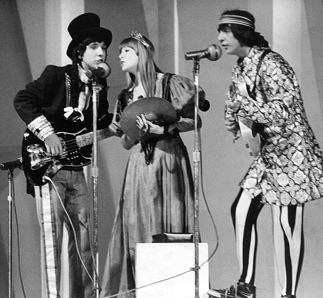

galeria


Tropicalia ela foi um movimento cultural brasileiro que ocorreu entre os anos de 1968-1969. A tropicalia foi um movimento cultural brasileiro que buscava denunciuar a politica e social do brasil, o movimento mais marcante mais marcante foisobre a musica, por sua estéta racial inspirando o rok eo pop e elementos da cultura como baião ea capoeira. A tropicalia buscava retirar a desigualdade socil que foi num movimento cenematografico brasileiro
.png "Os Mutantes - CC0 Domínio Público / Acervo Arquivo Nacional")